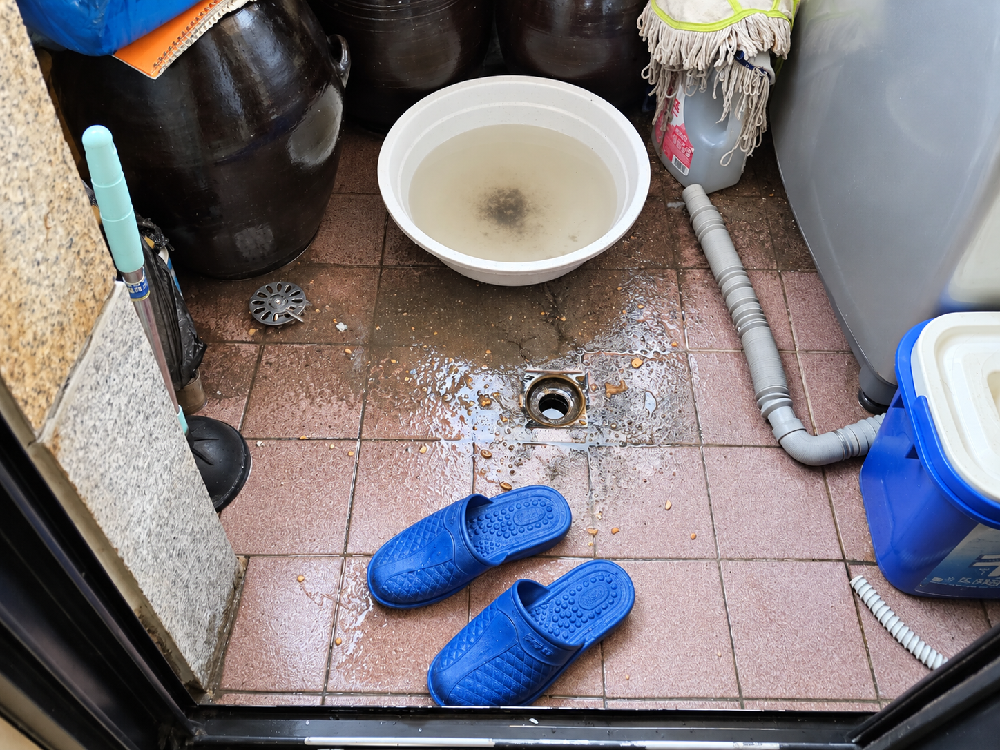
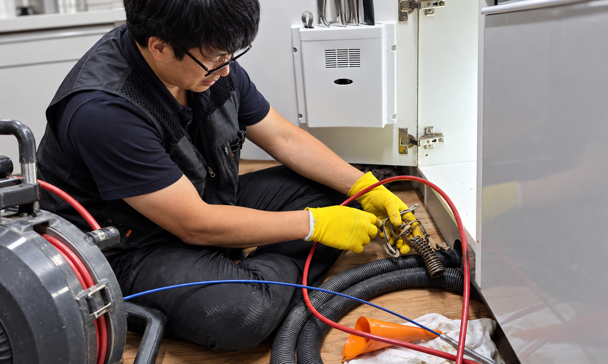

하수구 막힘
배수 지연, 물 고임, 반복 막힘 등 현장 증상 확인
● 안산 · 시흥 하수구 전문
싱크대·화장실·하수구 막힘부터 배관 고압세척까지.
현장 상태를 확인한 뒤 필요한 작업을 진행합니다.
※ 작업 가능 여부와 비용은 현장 상태 및 작업 범위 확인 후 안내됩니다.
WHAT WE DO
막힌 위치와 원인에 따라 필요한 점검과 작업 방법은 달라집니다.
배수 지연, 물 고임, 반복 막힘 등 현장 증상 확인
역류 위치와 주변 배수 상태 확인
배관 내부 오염과 슬러지 상태 확인 후 작업 판단
누수, 배관 이탈, 노후 부속 등 다른 원인 확인
FIELD NOTES
실제 현장에서 확인한 증상과 작업 내용을 사례별로 정리했습니다.

집수정 피트랩 막힘으로 역류가 발생해 석션 장비와 배관 스프링 장비로 큰 이물질을 제거하고 메인 배관 내부를 반복 세척했습니다.

배관 속 주름관과 각종 이물질을 제거해 막힌 구간을 정리하고 배수 상태를 확인했습니다.
하수구 막힘, 역류, 고압세척 등 실제 작업 내용을 계속 추가해 나갈 예정입니다.
CONTACT
증상과 위치를 알려주시면 상담에 도움이 됩니다.
대표전화 010-4810-6897